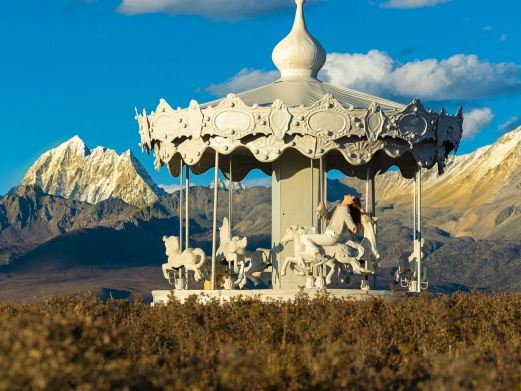
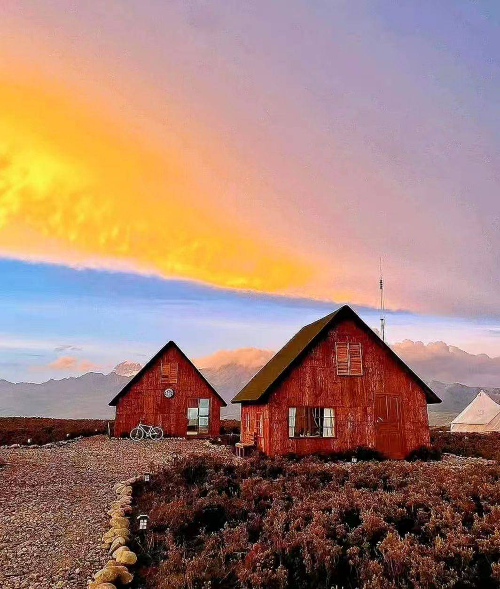

童话旷野 · 网红爆款
格底拉姆·旋转木马与红顶灯塔
在一望无际的荒原草甸边缘，立着一座红顶白色小灯塔、复古旋转木马、彩色热气球（装饰）与老旧甲壳虫复古车。背景就是险峻圣洁的雅拉雪山，落日余晖洒下时宛如童话梦境。
📸 出片技巧： 黄昏 18:00-19:00，坐在旋转木马上以雅拉雪山落日为背景拍摄逆光轮廓大片，氛围感在川西绝无仅有。

在一望无际的荒原草甸边缘，立着一座红顶白色小灯塔、复古旋转木马、彩色热气球（装饰）与老旧甲壳虫复古车。背景就是险峻圣洁的雅拉雪山，落日余晖洒下时宛如童话梦境。

双神山同框 · 360°全景向南正对 7556 米的蜀山之王贡嘎雪山主峰及群峰卫士，向北正对雅拉雪山。晴天傍晚整片天际先被染成粉紫与赤金，随后贡嘎主峰被镀上通红金光，雪山倒映在天际云海中，令人屏息。